Research
Themes
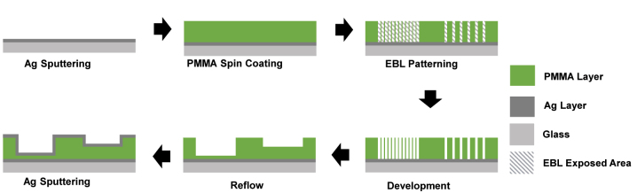
BLR Color Filters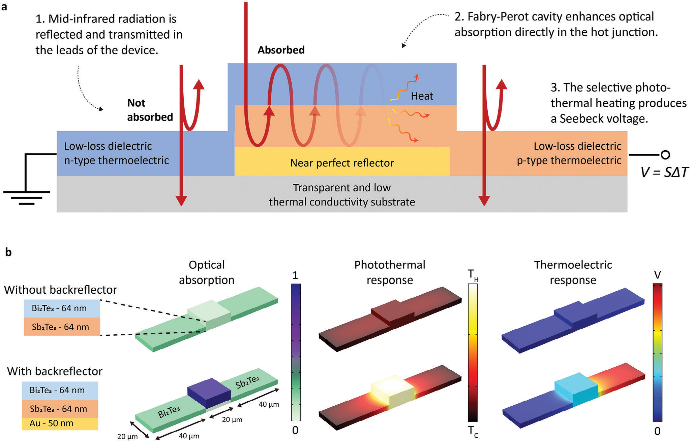
Mid-IR Detection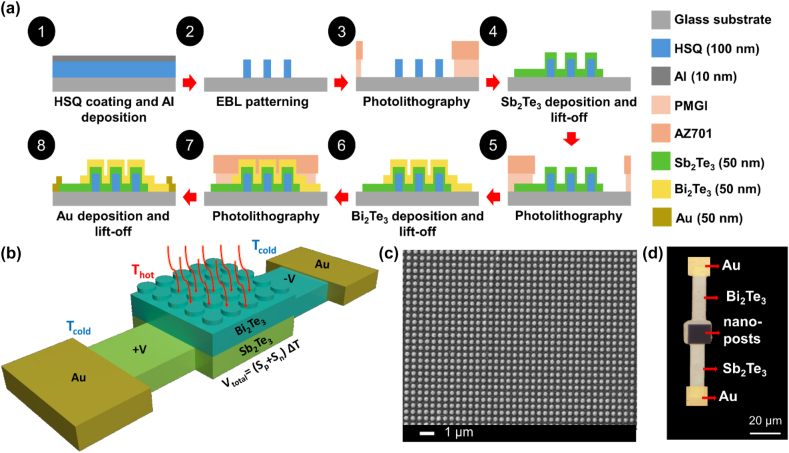
Plasmonic Resonators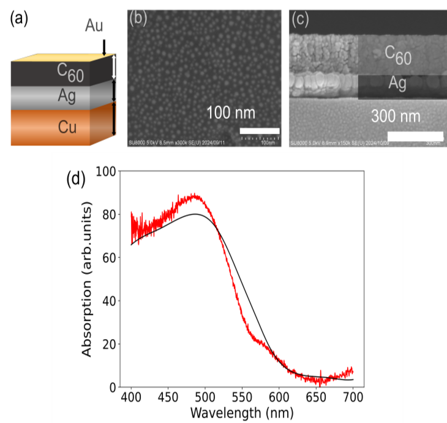
Wireless PowerInvestigating how optical resonances and material properties support light absorption and detection, including photo-thermoelectric devices for the mid-infrared.
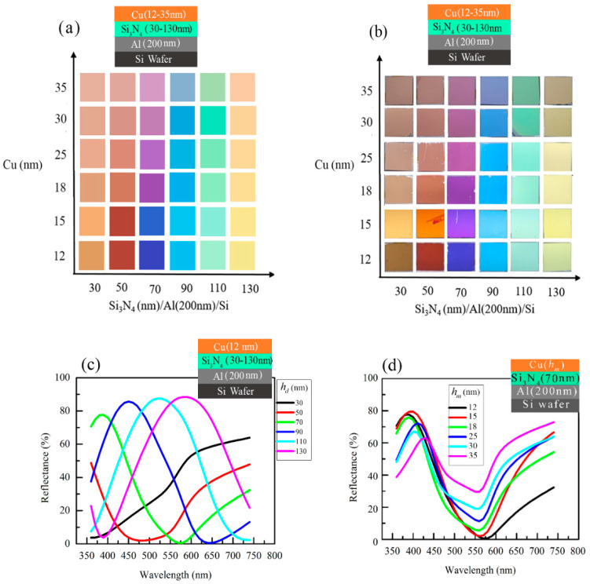
Al Surface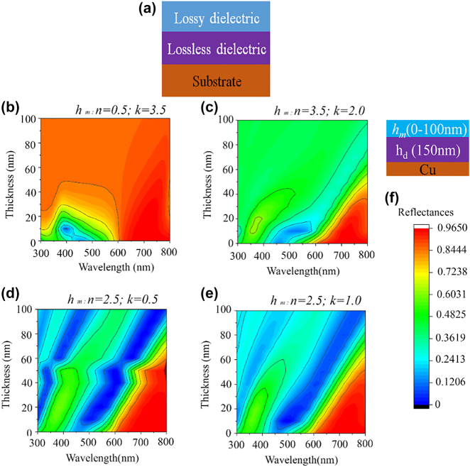
Fabry-PérotDeveloping optical coatings and resonant thin-film structures to control reflection, transmission, and color with an emphasis on practical fabrication.
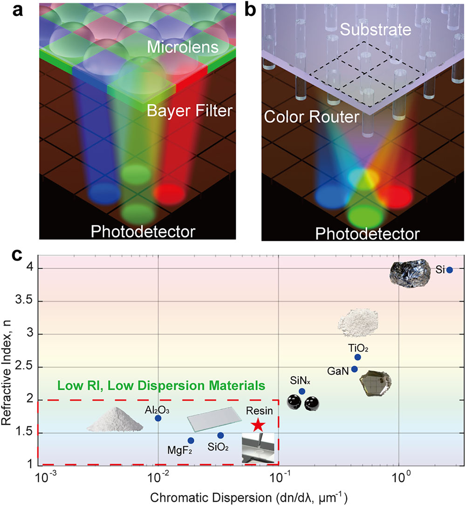
Color Routers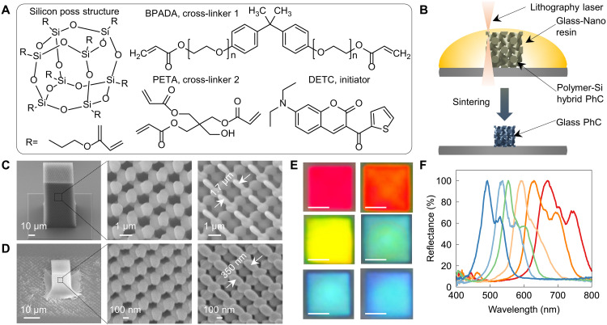
Photonic Crystals Single-Shot 3D Imaging Meta-MicroscopeRead summaryMeta-Microscope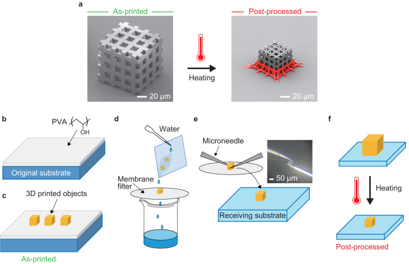
3D ShrinkingDeveloping advanced micro- and nanofabrication processes to create complex 3D photonic crystals, color routers, and single-shot 3D imaging meta-microscopes.
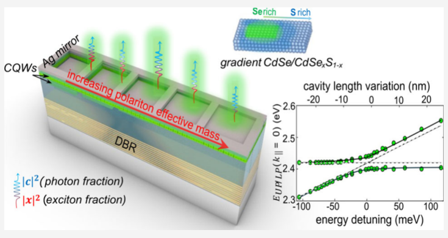
Quantum Wells Continuously tunable optical states of highly textured Sb2Te3Read summarySb2Te3 States Controlling TiO2 photocatalytic behaviour via perhydropolysilazane-derived SiO2 ultrathin shellRead summaryTiO2 Shell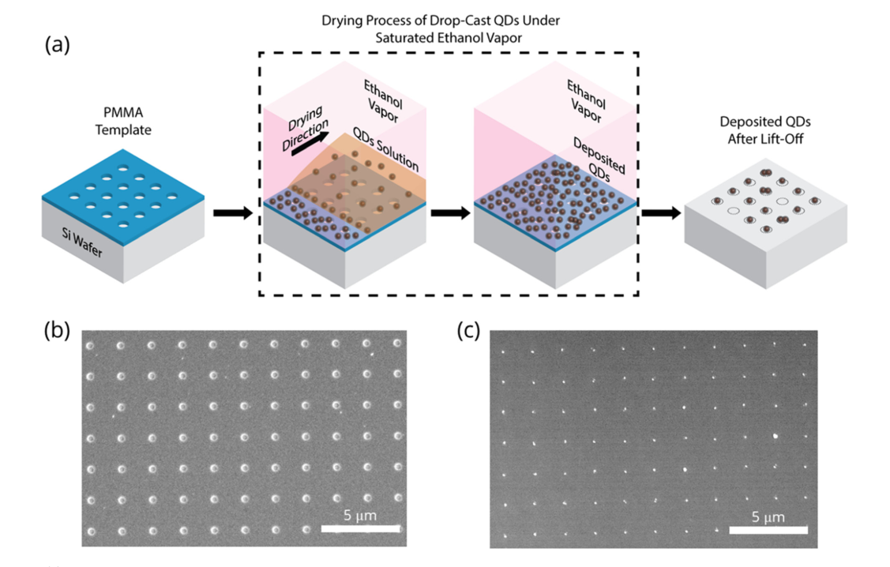
Quantum DotsExploring tunable optical states and light-matter interactions in specialized nanoscale materials, including highly textured phase-change materials and colloidal quantum dots.
Investigating the fundamental growth and coalescence mechanisms of epitaxial L10-FePt islands on MgO for applications such as heat-assisted magnetic recording.